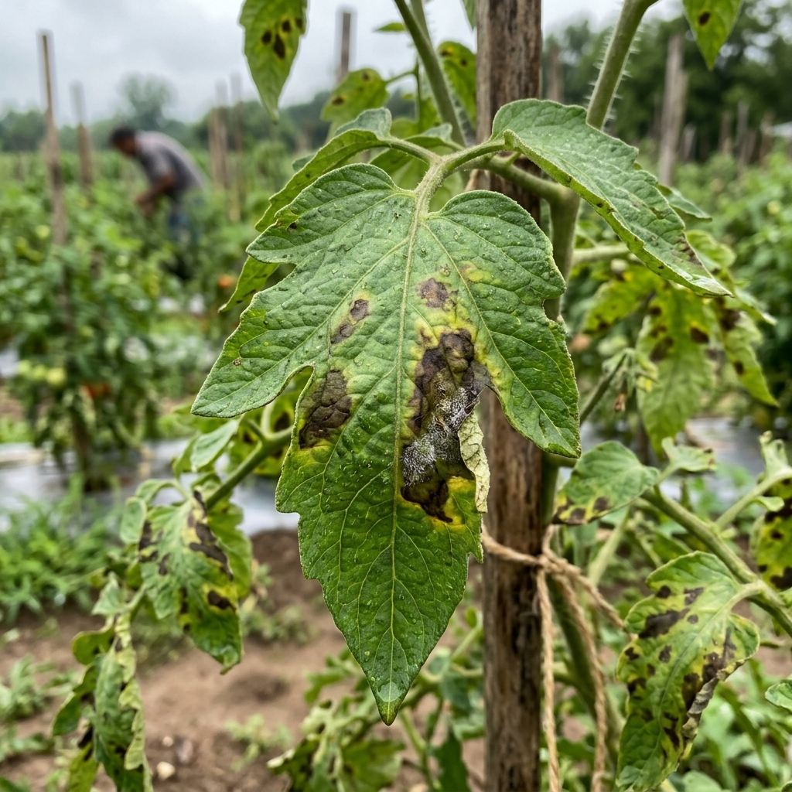
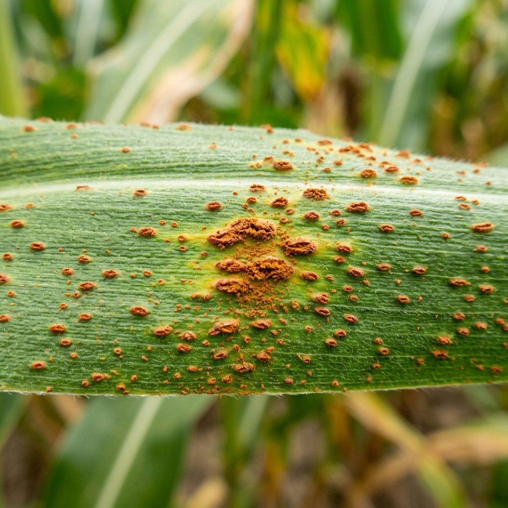
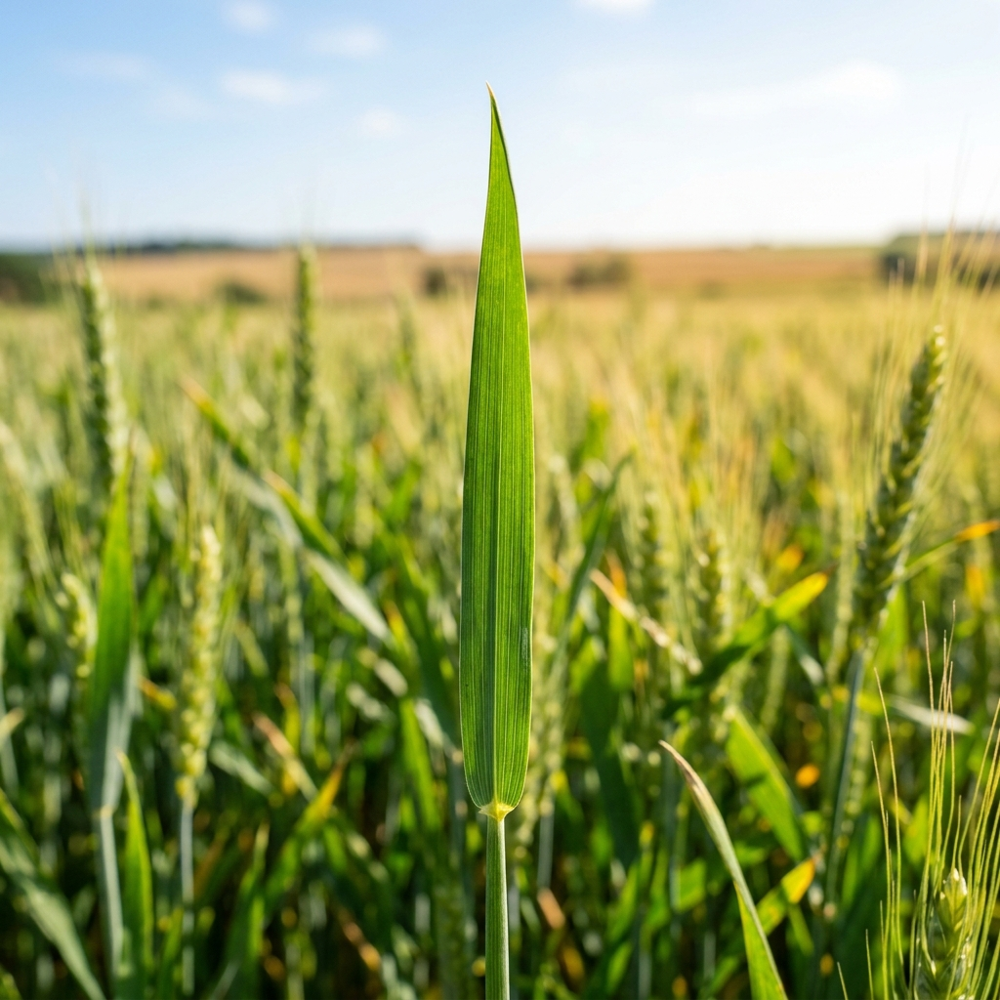

Autonomous Agriculture Environment Dashboard
Simulate localized conditions or load real-time environment telemetry to review agent-guided recommendations.
Environmental Telemetry Simulator
Live ControlsAutonomous Agent Advisories
Regional Weather Forecast (Simulated / Local)
Plant Disease Diagnosis Lab
Empower your diagnostics with Computer Vision. Upload an image of a crop leaf or use the live camera feed. AgriShield AI will scan the pathogen and formulate detailed organic and chemical remedies.
Crop Image Workbench
Drag & drop your leaf image here, or browse files
Supports PNG, JPG, JPEG (Max 10MB)
No photo handy? Test with one of these crop samples:

Tomato Blight
Corn Rust
Healthy WheatUpload a leaf image or click a sample to compile the AI Diagnostic Report.
Soil Chemistry & Irrigation Optimizer
Balance nutrients, manage pH values, and determine daily crop watering budgets based on live environmental telemetry.
Soil Chemistry Balancing (NPK & pH)
Smart Water Budget Calculator
Irrigation OptimizerSystem Settings
🔌 API Access Credentials
The AgriShield server handles Gemini API operations. You can paste your personal Gemini API key below to connect to the live AI service directly. It is saved locally in your browser.
🌍 Environmental Telemetry Defaults
Preset default simulation parameters. You can restore these variables anytime.